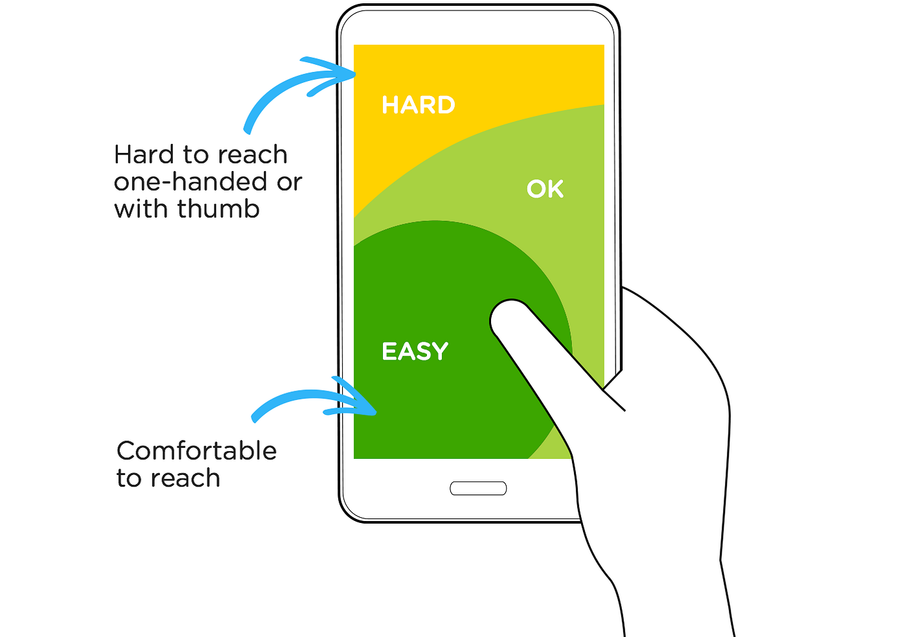
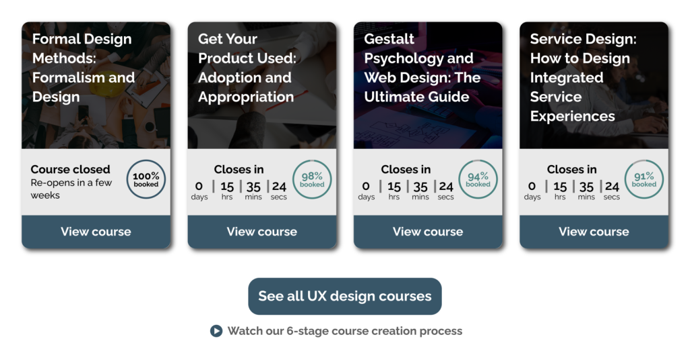

Model-Based Systems Engineering and Systems Thinking
Creating successful and more user friednly digital environments in a world where technologies are interconnected calls for more than just technical knowledge, it calls for a different way of thinking. That new perspective can be found through systems thinking, a topic we explore in this week's reading, Systems Engineering Demystified. Systems thinking pushes us to think outside the box, see the larger picture, and consider how the parts work together, in contrast to typical linear thinking. It encourages us to recognize interdependencies, anticipate unintended consequences, and understand stakeholder perspectives. This kind of thinking is no longer optional in the complicated and rapidly evolving world of today—it is absolutely necessary for designing systems that are resilient, adaptive, and user-centered.
Building digital systems without knowing how one component works with the others is not a very good idea in our modern advanced world. Model-Based Systems Engineering (MBSE) is a solution to that problem. Engineers can design, test, and improve systems holistically with MBSE before writing a single line of code, reducing risk and enhancing collaboration across teams (Holt, 2021). In this blog, I will explore what systems thinking really means, how it compares to older approaches, and why MBSE is so critical for building reliable, user-centered digital environments that can adapt to real-world complexity.
What Is Systems Thinking?
To put it simply and clear, systems thinking is a succesfull method of understanding the world around us by focusing on the connections and patterns among objects rather than just the objects themselves. Instead of dividing issues into separate parts, systems thinking takes into account how those parts work together to create a whole. According to Jon Holt's Systems Engineering Demystified, systems thinking is the cornerstone of all systems engineering methodologies. Holt claims that systems are composed of interdependent parts that create boundaries, interfaces, structures, requirements, and limitations (Holt, 2021). According to the book, we can't fully understand a system by examining each of its components separately; rather, we have to understand how those parts interact and what outside factors have an impact on them.
This mindset contrasts sharply with the more linear and reductionist thinking that dominated traditional engineering disciplines. Systems thinking places more emphasis on the relationships and context of those elements than reductionism does on the analysis of individual parts.
Systems Thinking vs. Traditional Linear Thinking
The foundation of linear thinking is the idea that all causes have direct effects (Linear Thinking: The Ultimate Guide | MindManager, 2022). It's clear, dependable, and simple to understand, yet it has limitations. Actions in digital systems frequently have indirect effects, and several elements simultaneously affect results.
Imagine a software development team that wants to enhance the performance of a website. A linear thinker would say "The site is slow, let's optimize image sizes," Although it might be useful, it misses the larger picture. A systems thinker would examine the ways in which various elements, such as databases, frontend resources, user traffic, and third-party integrations, interact and affect overall performance.
Systems thinking additionally helps teams in solving "wicked problems," which are complex, poorly organized challenges that lack a clear solution. These issues are prevalent in modern engineering, as solutions for one problem can lead to new ones in another (Arnold & Wade, 2015). Such complexity is difficult for traditional thinking to handle. When you can separate variables and solve them on your own, it performs exceptionally well. However, linear thinking on its own becomes a weakness as digital systems become more user-centered and creative. We must adopt an approach that values interdependency, complexity, and uncertainty. That's what systems thinking promises.
The Role of MBSE in Systems Thinking
Model-Based Systems Engineering (MBSE) is the set of methods that makes systems thinking a reality. The parts of a system, including its stakeholders, constraints, and other components, are represented, examined, and managed by MBSE using visual models. According to Holt (2021), MBSE replaces interactive, digital models that work as a "single source of truth" for traditional document-heavy methodologies. This promotes flexible, user-focused design, improves collaboration, and lowers errors by enabling teams to model systems before they are constructed.
MBSE is particularly effective when systems are too complicated to adequately explain in text documents alone. Think of a contemporary smart city platform that combines public services, emergency systems, energy consumption statistics, and traffic monitors. It would be hard to design such a system with basic spreadsheets. Teams can visualize relationships, spot any problems, and make sure all stakeholder requirements are satisfied with the help of MBSE.
When it comes to guaranteeing traceability—the capacity to follow requirements from creation to execution, MBSE is especially helpful. In highly regulated industries like healthcare or flight, where systems have to live up to strict compliance standards, this is crucial.
MBSE and Digital Product Design
MBSE is not limited to engineers working in the automotive or aerospace industries. It is becoming more and more significant in the design of digital services, apps, and software. Before development starts, designers and engineers can map out elements and their interactions using MBSE. This guarantees that the finished product satisfies user needs and company objectives in addition to avoiding expensive errors. According to a study in the book called "Model based systems engineering : fundamentals and methods" (Micouin, 2014), MBSE enhances early-stage decision-making, which lowers development time and expenses. Teams can confidently evolve, test user journeys, and model situations rather than speculating
Cooperation and Interaction in MBSE
The fact that MBSE develops better teamwork is among its most underappreciated advantages. MBSE enhances communication between designers, engineers, stakeholders, and users by providing common models and visual aids.
One of the "Three Evils of Systems Engineering," according to Holt in Systems Engineering Demystified, is communication failure, which occurs when teams misunderstand requirements or ignore stakeholder viewpoints (Holt, 2021). In order to solve this, MBSE develops models that are usable by team members other than engineers. MBSE makes it simpler to have fruitful conversations and guarantee that everyone is on the same page.
Why Are Systems Thinking and MBSE Important Now
Digital systems are not limited to individual devices anymore. They enable global supply networks, AI-powered platforms, smart homes, and health trackers, among other things. Systems thinking and MBSE are not only beneficial, but also necessary as these systems become more integrated and complicated.
Using systems thinking teaches us to tackle issues from an extensive point of view. We take emerging actions, stakeholder viewpoints, and unexpected impacts into account. By collectively and transparently viewing, modeling, and improving systems, MBSE offers the means to take action on that viewpoint.
Using these strategies produces better results, systems that are flexible, user-centered, and change-resistant, whether you're creating a basic website or a business platform.
Conclusion
Learning MBSE and systems thinking has already changed my approach to projects as an IT and digital design student. I now view digital tools as systems, with users, interfaces, limitations, and settings that influence every choice, rather than separate "things."
This blog post is only the first step. I'll continue to use these guidelines as I work on HTML, CSS, and GitHub projects, asking not simply "What should this do?" but also "How does this fit into the bigger picture?" And I think that's what systems thinking really excels at.
Module 1.2 Blog Post
From Chaos to Clarity: How Systems Thinking and MBSE Streamline Complex Engineering Projects
Introduction
Systems integration is central to today’s most ambitious engineering endeavors, whether developing autonomous vehicles or building smart cities. These projects involve more than just clever components—they require carefully managed complexity. That’s where systems thinking and Model-Based Systems Engineering (MBSE) come into play.
In this post, I, Osman Kalayci, explore how systems thinking reshapes our understanding of complexity and how MBSE provides the tools to manage it. I also highlight how system development life cycles (SDLCs)—specifically the linear, iterative, and incremental models—help structure system evolution, and why these models are essential for building sustainable digital systems.
Systems Thinking: Seeing the Bigger Picture
At its heart, systems thinking is a way of understanding how individual parts relate to the whole. It teaches engineers to move beyond isolated problem-solving and look for broader patterns and relationships.
“Systems thinking is a way of thinking that enables people to see the forest and the trees.” – Meadows (2008)
This mindset is essential in digital systems, which often interact with environmental, social, political, and economic forces. Consider a 5G rollout—it involves not only hardware and network performance, but also regulation, health perceptions, and software integration.
Benefits of systems thinking in digital system design:
1) Helps identify unintended consequences.
2) Improves communication across disciplines.
3)Encourages sustainable and ethical design choices.
Model-Based Systems Engineering (MBSE): A Tool for Managing Complexity
Once systems thinking sets the stage, MBSE makes it actionable. MBSE replaces static documents with interactive models that represent requirements, design, behavior, and constraints in one unified structure.
According to Estefan (2007), MBSE provides a "single source of truth" that evolves alongside the system. It is especially critical in digital environments, where requirements change frequently and components are deeply interconnected.
Why MBSE is key to system sustainability and evolution:
1) Models adapt as the system evolves, unlike static documentation.
2) Simulations help engineers anticipate performance and failures.
3) Real-time collaboration reduces silos and delays.
Understanding Life Cycle Models in Digital Systems
Life cycle models provide a roadmap for guiding systems from idea to retirement. In digital systems, they’re not just about organizing tasks—they’re about ensuring the system can scale, adapt, and endure over time.
Let’s look at how MBSE supports each model and why each matters for sustainable design:
1) Linear Life Cycle Model (Waterfall)
Use case: Systems with stable, well-defined requirements (e.g., bridge design, manufacturing software).
2) Minimal flexibility for changes once a phase is complete
MBSE advantages in linear models:
1)Early system modeling uncovers issues before costly mistakes are made
2) Simulations validate assumptions during the design phase
3) Ensures traceability throughout the process
Why it matters:
This model works well when sustainability is built in from the start. MBSE helps catch design flaws early, ensuring long-term reliability and minimizing costly rework (Friedenthal et al., 2011).
2) Iterative Life Cycle Model
Use case:
Systems with evolving requirements (e.g., apps, AI models, healthcare platforms).
Key characteristics:
1) Multiple development cycles or loops
2) Feedback-driven refinement after each iteration
MBSE advantages in iterative models:
1) Allows changes without rewriting entire documentation
2) Engineers can model and compare design versions easily
3) Simulation and feedback loops improve adaptability
Why it matters:
Digital systems must adapt to user feedback and tech changes. Iteration, supported by MBSE, ensures resilience and long-term improvement.
Incremental Life Cycle Model
Use case:
Modular systems (e.g., IoT platforms, SaaS tools, smart home devices).
Key characteristics:
1) Develop and deliver system parts (increments) separately
2) Each part adds new functionality
MBSE advantages in incremental models:
1) Components are modeled and tested independently
2) Ensures each addition integrates seamlessly with the system
3) Enables staged deployment and testing
Why it matters:
Incremental delivery keeps systems sustainable by reducing risk. MBSE maintains consistency across modules, avoiding integration problems down the line.
Why Life Cycle Models Are Essential for Digital System Design
Digital systems are inherently complex, dynamic, and interdependent. Life cycle models provide structure to this chaos.
They help by:
Supporting long-term sustainability: Systems evolve over years, not weeks. Life cycle planning ensures components remain useful, secure, and interoperable.
Enabling adaptability:Iterative and incremental models empower digital systems to respond to new requirements and technologies.
Reducing waste and cost:Identifying failure points early in the life cycle saves resources and accelerates development.
Without life cycle models, digital projects risk short-sighted design, over-complexity, and eventual collapse.
MBSE in Action: Case Studies
1) NASA’s Artemis Mission
1) NASA uses MBSE to manage thousands of components across spacecraft, communication, and safety systems.
1) Siemens adopted MBSE for industrial automation.
2) Result: 30% reduction in testing time and faster market delivery, with better compliance across international markets (Siemens, 2022).
Top Benefits of MBSE for Digital Systems
1) Here’s a recap of how MBSE boosts design, sustainability, and system evolution:
Real-time updates:No more outdated documents.
Simulation & validation:Spot errors before production.
Traceability:Track every change from requirement to deployment.
Cross-functional collaboration:One model, many perspectives.
Scalability:Models evolve with the system.
Conclusion
The Future Belongs to Systems Thinkers
In a rapidly changing world, complexity is inevitable. Systems thinking helps engineers frame problems wisely, and MBSE gives them the tools to build resilient, intelligent systems.
When combined with robust life cycle models, MBSE transforms digital systems into adaptive, scalable, and sustainable assets. It’s not just about avoiding failure—it’s about building for the future.
The next generation of digital engineers won’t just be coders or designers. They’ll be systems thinkers, ready to connect dots, manage complexity, and lead innovation.
Human First: Designing with Empathy, Perception, and Usability in Mind
Human First: Designing with Empathy, Perception, and Usability in Mind
Design is about people, not just color schemes, wireframes, or visual appeal. Human-Centered Design (HCD), a process that centers every design decision around the needs, objectives, and context of the user, is at the foundation of effective digital systems. HCD is a way of thinking that asks designers to see the world from their users' point of view.
Understanding Human-Centered Design
Empathy is the cornerstone of human-centered design. The idea is the same whether using the ISO 9241-210 framework or the Field Guide from IDEO.org, knowing the user's experience leads to effective design.
In order to bring human aspects into system development, the ISO 9241-210 standard describes a six-step cycle that starts with planning and context research, continues with solution evaluation, and ends when user demands are met. This model's versatility, its capacity to accommodate both quick and conventional approaches while requiring ongoing user participation throughout the design process, is what makes it unique.
In the meanwhile, design is approached via the understandings of co-creation, empathy, optimism, and iteration in IDEO's Field Guide to Human-Centered Design. It presents seven mindsets—from "embracing ambiguity" to "learning from failure" and "making it", that enable designers to interact meaningfully with users (IDEO). These principles emphasize the significance of early testing, real-world observation of people in real-world situations, and flexibility.
The message is very apparent in both models: meaningful design is impossible without empathy and involvement. "Empathy mapping helps visualize user attitudes and behaviors to align team perspectives and ensure that design decisions are rooted in genuine user needs," according to Gibbons (2018) of the Nielsen Norman Group.
Together with these models, new developments in user experience tools have promoted the systematic use of HCD concepts. For example, designers can obtain real-time input from a variety of consumers by using usability testing platforms such as Maze and Optimal Workshop. With the help of these technologies, even small teams can integrate user validation and iterative design processes into limited project deadlines, making HCD more accessible and scalable than ever.
Furthermore, by adding reliability and structure to IDEO's model, ISO 9241-210 makes sure that no stage of the procedure is missed. While remaining adaptable to many processes, including quick cycles and conventional project schedules, it supports creativity in accountability and usability requirements. It is essential to combine structure and creativity in order to find a balance between innovation and sustainability.
Furthermore, reading is a taught action that can be affected by poor design. In order to serve users of different literacy levels and visual talents, Johnson stresses the significance of selecting proper font sizes, contrast, spacing, and alignment. By minimizing long text passages, emphasizing key information, and using headers and bullet points to make navigation simpler, designers can reduce psychological burden.
Designing with Perception in Mind
Empathy isn't enough on its own. Additionally, designers need to be aware of how people view and use digital interfaces. According to Jeff Johnson's book Designing with the Mind in Mind, usability is influenced by fundamental psychological concepts such as perception, attention, and memory.
The emotional impact of images is another visual element that is often overlooked. Images can inspire comfort, urgency, or trust and are effective meaning-conveyors. Including real, varied images that represent the user base not only improves inclusion but also creates emotional bonds. For instance, in healthcare apps, showcasing a varied range of patients and providers promotes relatability and lowers interaction anxiety. User engagement is often aided by emotional design, particularly where confidence and trust are needed.
According to Johnson, context, previous experiences, and present objectives all influence how users perceive what they anticipate. Errors and confusion rise when visual layouts depart from well-known structures. Task flow can be disrupted, for instance, by employing an unfamiliar icon or positioning a "submit" button in an unusual place (Johnson, 2020). In addition to improving learnability, consistent interface design lowers psychological burden.
Furthermore, users glance rather than read. This emphasizes how important a clear visual hierarchy is. Categories and functions within a layout are easier for users to understand when principles like accessibility, similarity, and closure are applied. Gestalt psychology underscores these ideas, which assist designers in creating interfaces that match user expectations with visual structure.
UX Laws in Practice
Designers frequently use well-established UX laws, which define expected human behavior in digital contexts, to further improve usability. These rules offer helpful direction for early design choices that improve user experience rather than hinder from it.
Jakob’s Law states that Users prefer interfaces that perform similarly to those they have previously used. Users prefer interfaces that perform similarly to those they have previously used, according to Jakob's Law. This indicates that utilizing standard design elements, such as a search icon in the upper right corner or mobile swipe gestures, not only improves usability but also lessens annoyance (Yablonski, 2020). The main reason Snapchat's 2018 redesign failed was because it diverged from these norms, which outraged users.
According to Fitts' Law, a user interface element's size and distance determine how long it takes to interact with it. Important buttons, such as "submit" and "delete," should therefore be sufficiently large and accessible, particularly on mobile devices (Yablonski, 2020). For instance, Tesla's touchscreen design puts frequently used functions within easy reach to increase productivity and safety.
Hick's Law highlights how having too many options causes decision-making to be delayed. It's preferable to keep things simple. Imagine Google's simple homepage, which consists of just two buttons and a search box.
According to Miller's Law, most people can only remember seven plus or minus two things at a time. Reading tactics, such as grouping relevant elements together, utilizing whitespace, and arranging menus into logical parts, are used in effective interfaces. For this reason, phone numbers are structured (123-456-7890, for example) to make them easier to remember.
These laws are useful instruments that assist in translating human psychology into significant digital experiences. Although basic interface design is guided by these laws, its application requires context. Miller's Law, for instance, can suggest breaking up content into reasonable portions, but the type of content is important. While an academic site could need more specific alternatives for relevance, an e-commerce platform might profit from having fewer product categories. Therefore, rather than being set rules, UX laws should be viewed as flexible suggestions.
Empathy, Perception, and Attention
Empathy, Perception, and Attention
One concept unites all of these ideas: design must be functional for people. Early design choices, such as button placement, labeling, or style, may improve or break usability, whether you're creating a simple web page or a full-scale program. Overly abstract iconography, too many alternatives, or misaligned visual cues can make users pause or stop working on a task completely.
Supporting mental and emotional well-being is another important function of design. Dark mode, less motion toggles, or relaxing color schemes are examples of features that can increase accessibility for people with anxiety disorders or sensory sensitivity. Early consideration of these issues during the design phase allows teams to show greater empathy and increase their user base by making thoughtful accommodations.
Also, excellent design considers the demands of the user. It recognizes human limitations, clears misunderstandings, and directs attention to important actions. Above all, it emphasizes empathy as a daily design mindset, not only in user testing or surveys.
Diversity, Context, and Culture
Cultural sensitivity is another important but frequently disregarded component of human-centered design. Cultural differences can greatly affect how colors, icons, and even interface metaphors (such as a "trash bin") are understood. Diversity in skills, reading levels, device access, and digital proficiency are all taken into account in a fully inclusive design process, in addition to user demographics. Designing for accessibility improves usability for everyone, not only those with disabilities, claims W3C's Web Accessibility Initiative (W3C, 2024).
With the ongoing globalization of digital experiences, designers now need to think about translation and localization techniques. In East Asian or Middle Eastern cultures, a term, symbol, or arrangement that works well in the United States might not have the same meaning. The design strategy has to consider local rules and regulations, regional accessibility standards, and left-to-right versus right-to-left reading directions from the very start.
Lastly, context is equally important. When using an app under a high-stress scenario (such as emergency response), a user's behavior will differ from that of a person using a social network while sitting on their couch. The interaction must be shaped by human-centered designers who are aware of the user's emotional, technological, and environmental surroundings.
Designing for the Extreme Situations
Product teams frequently concentrate on the "average user," but designing for rare circumstances promotes creativity and inclusivity. These include older users, people with physical disabilities, and users who use platforms with inadequate connectivity. While targeting a specific group, Microsoft's design solutions for the Xbox Adaptive Controller also had an impact on more general accessibility standards (Manjoo, 2018). Designing for extreme scenarios improves ethical design, expands market reach, and breaks down systemic obstacles.
Testing and Feedback
Iteration is another essential element of both the ISO and IDEO approaches. Whether they are digital models or paper designs, prototypes provide quick learning. Frequent testing helps identify trouble spots early rather than waiting until a product is "finished" to involve users.
"Failing early to succeed sooner" is emphasized by IDEO.org's Field Guide, which is consistent with adaptable development's acceptance of feedback systems. Testing usability is a constant procedure rather than a one-time event. Improvements should be based on each round of feedback. And not only from end users, stakeholders, developers, and subject matter experts can all provide insightful viewpoints.
Conclusion: Designing for People, Not Just Screens
We acknowledge the entire range of human experience—how we see, choose, feel, and remember—when we "design for people." Human-Centered Design is a dedication to compassion, curiosity, and iteration rather than a list of requirements.
It is not just our duty as designers to find solutions to issues, but also to do so with consideration for those affected users. With the help of fundamental UX rules, IDEO's compassionate approach, and a grasp of perception and the ISO 9241-210 framework, we can design systems that are not just useful but also genuinely human-first.
Designing with the Mind in Mind: How Digital Systems Can Support User Thinking Through Usability
In digital design, usability is a cognitive commitment rather than just a trendy term. In order to understand how human memory, attention, perception, and mental models influence how we interact with technology, designers have to embrace the mindset of their users. A system may have an appealing look, but it will ultimately fall short of its primary goal if it does not fit with our thoughts, memories, and behaviors. Making usable systems is both a technical skill and a moral obligation in a time when complicated interfaces and digital overload are prevalent.
With an emphasis on lowering the cognitive demands placed on users, this blog post examines what makes digital systems "usable." We will examine how to support memory and mental models, maintain consistency, provide insightful feedback, and steer clear of design pitfalls that overwhelm or confuse users, all while drawing on cognitive psychology and usability research, such as Jeff Johnson's Designing with the Mind in Mind and Jon Yablonski's Laws of UX. Additionally, we'll include practical examples and suggested methods for human-centered complexities simplification.
Understanding the Cognitive Foundations of Usability
Understanding the human mind is the first step in designing for usability. Human memory is not built to hold vast amounts of information indefinitely, in contrast to computers. Johnson (2010) states that if information is not practiced or encoded into long-term memory, short-term memory's ability to retain seven items at once rapidly deteriorates. Users become overwhelmed, distracted, and more prone to errors when asked to recall instructions, re-enter lost data, or mentally perform complex steps without assistance.
This limitation shows up itself on a daily basis in digital systems. For example, if a customer types the wrong ZIP code during the e-commerce checkout process, they will have to manually enter their billing address again. Users are subjected to needless emotional and cognitive strain as a result. A more user-friendly system would instead remember the last input, fill it in automatically when necessary, or provide specific correction suggestions.
Mental models are also very important. Based on prior experiences, a user's internal understanding of a system's operation is known as a mental model. Users can anticipate what will happen next, navigate more effectively, and recover from mistakes more readily when the system acts in a way that meets these expectations. The "trash can" icon for file deletion is a straightforward example; it instantly makes sense because it corresponds to the metaphor of throwing something away in the real world.
Image 1: Usability concept. Source: imgur.com
However, depending on factors like culture, experience level, and previous exposure to similar systems, users' mental models can differ greatly. While experienced shoppers might anticipate features like order tracking or one-click checkout, new users might anticipate that a shopping app will function similarly to a physical store. Confusion and a decline in trust result when these expectations are not fulfilled or are broken. Designers have two options: either meet these expectations or gradually onboard users using onboarding cues and useful microinteractions.
The Role of Recognition and Recall in Usability
The fact that recognition is far simpler than recall is among the most important discoveries in cognitive psychology. While recognition depends on cues to trigger memory, such as selecting the right response from a multiple-choice list, recall requires the brain to retrieve information without any cues, such as responding to an essay question. According to this principle, interface designers should make options visible to users so they can recognize them rather than making them remember them.
For this reason, drop-down menus, autocomplete fields, icon labels, and obvious navigation structures are all components of good design. On the other hand, there is a greater chance of error and frustration when a system relies on users to remember commands, URLs, or deep menu paths. This is one of the reasons why, despite their strength, command-line interfaces are more difficult for the typical user to use than graphical interfaces.
Emotional design also involves recognition. Users feel oriented and in control when they come across familiar cues, like a magnifying glass for search, a red exclamation point for warnings, or an icon that resembles a play button. This familiarity boosts user satisfaction and confidence.
Image 2: Common UI recognition symbols.
Consistency: Jakob’s Law and the Power of Familiarity
According to Jakob Nielsen's Law, users expect the user interface to function similarly to other websites they've already visited because they spend the majority of their time on them. Because users are unable to transfer knowledge from one interface to another, inconsistencies in terminology, layout, or navigation make using a system more cognitively demanding. Consistency boosts confidence, cuts down on learning time, and helps in outcome prediction.
Another way to close the gap between assistive technologies and user interfaces is through consistency. For instance, to assist users with impaired vision, screen readers rely on predictable layouts and structured navigation. By consistently using ARIA (Accessible Rich Internet Applications) labels, designers enable these technologies to understand a webpage's structure and give users a useful experience.
The same is true of language. Users may wonder if "Messages" and "Chats" are the same or distinct features if they appear on different pages. Users' cognitive load is increased by minor discrepancies that require them to pause, reflect, and reset. The well-known quote from Krug (2014) states that "Don't make me think" should be a fundamental design principle since every choice a user must make could go wrong.
Consistent design also increases the credibility of a brand. Customers unconsciously assess a product's professionalism by looking at how smoothly and consistently it operates. Every instance of difficulty brought on by inconsistent actions damages that credibility. On the other hand, trust is fostered when all interactions feel consistent, natural, and reliable.
Image 3: Consistent interface patterns help users build familiarity.
Feedback: Connecting the User and System
Sustaining a productive discussion between the user and the system requires feedback. Feedback enables users to identify mistakes, comprehend the effects of their actions, and make well-informed decisions, as highlighted by Yablonski (2020). Feedback, whether it be tangible (a vibration), sensory (a chime), or visual (a checkmark), confirms that something has occurred—or must occur.
Another essential component of error prevention is quick, clear feedback. To prevent users from clicking a "Save" button repeatedly or assuming nothing happened, it should, for instance, change to "Saved" or display a green checkmark after being clicked. In the absence of such confirmation, users may believe that something went wrong and repeat their action, which can occasionally result in mistakes like making a payment twice.
Feedback in complex systems should also be proactive and anticipatory. For example, collaborative edits in Google Docs show users what other people are doing in real time. This kind of dynamic feedback promotes a feeling of shared space, facilitates collaborative workflows, and avoids misunderstandings.
Tesler’s Law and the Ethics of Complexity
Every application has a certain amount of complexity that cannot be eliminated; it must be managed by the user or the system, according to Larry Tesler's Law of the Conservation of Complexity. Therefore, good design relieves the user of needless burden by shifting the complexity onto the equipment being used.
Examples of equipment taking in complexity in user-centered systems include input validation, autofill, and predictive search. This concept is further developed by AI-powered chatbots and recommendation engines. For example, Netflix uses an algorithm to provide recommendations based on user preferences and viewing history, which helps users make decisions more easily. Personalized recommendations take care of the cognitive burden of sorting through thousands of titles, saving the user time and effort.
This power does, however, come with moral obligations. Designers have an impact on user behavior when they decide what should be visible and what should be hidden. Removing control or concealing important options shouldn't be the result of hiding complexity. Even if a design seems "clean," it has failed if a user cannot quickly access account information or change their privacy settings. Ethical simplification minimizes needless mental labor while maintaining user autonomy.
Real-World Design Failures: What Not to Do
Design failures can teach us some of the most valuable lessons. The 2013 launch of Healthcare.gov is one well-known example. There were numerous usability problems with the website, which was designed to assist millions of Americans in enrolling in health plans. Users experienced data loss after submission, slow-loading forms, unresponsive pages, and unclear error messages. The system put users under undue cognitive strain, disregarded mental models, and did not facilitate user thought (Norman, 2013).
Similar to this, Snapchat's 2018 redesign disrupted users' preexisting mental models by combining chats and stories into a single feed. Even though the redesign was aesthetically pleasing, it departed from accepted interaction patterns, which caused misunderstandings, criticism, and a user petition with over a million signatures calling for the return of the previous interface.
Another example is Windows 8, which eliminated the conventional Start button and gave desktop users an interface modeled after a tablet. The sudden shift was met with immediate criticism because it disregarded users' mental models of desktop environments. Following numerous complaints, Microsoft eventually brought back familiar features in Windows 10.
Designing with Empathy: Strategies That Work
Seeing the world through the eyes of the user and acknowledging the situational, emotional, and cognitive contexts they bring with them are essential parts of designing with empathy. Users might be in stressful situations, fatigued, non-native speakers, or distracted. By creating experiences that are graceful and forgiving, empathic design anticipates that people will make mistakes.
Here are proven strategies for supporting user thinking and reducing cognitive load:
Make use of progressive disclosure. At each step, only display the information that users need to know. To prevent overwhelming them, present additional options as needed.
Create for recognition rather than memory: Maintain the visibility of key functions. Avoid hiding important features, use icons with labels, and recommend recent or frequent actions.
Group related information using visual hierarchy and whitespace. This facilitates comprehension and scanning.
Give prompt, insightful feedback: Every action should cause a reaction from the system. Feedback aids in decision-making and trust-building for users.
Make sensible use of defaults: For quicker interactions, choose common or safe options in advance. Defaults can direct users toward suggested courses of action.
Make actions reversible: Offer undo or back options so users feel safe experimenting.
Ensure consistency: Maintain visual, functional, and linguistic consistency across pages, devices, and contexts.
Simplify error messages: Use plain language to explain what went wrong and how to fix it.
Slowly onboard new users: Introduce new features with tips, animations, and walkthroughs.
Test with diverse users: Include users of different ages, abilities, and cultural backgrounds in testing to uncover hidden cognitive burdens.
Conclusion
Usability is a human necessity, not merely a design trend. Designers must make sure that digital systems support people's thoughts, feelings, and behaviors as they become more integrated into our daily lives. We can design experiences that are both practical and compassionate by being aware of memory limitations, promoting mental models, enforcing consistency, and giving clear feedback.
Users of digital products shouldn't be expected to adjust to machines. Rather, they need to be designed to accommodate the needs, shortcomings, and strengths of the human mind. Systems become more than just useful; they become empowering when they honor our cognitive limits and provide deliberate simplification.
Sources
Johnson, J. (2020). DESIGNING WITH THE MIND IN MIND: simple guide to understanding user interface design guidelines. Morgan Kaufmann Publisher.
Yablonski, J. (2020). Laws of UX: using psychology to design better products & services. O’Reilly Media, Incorporated.
Norman, D. (2013). The Design of Everyday Things. MIT Press. (Original work published 1988)
Krug, S. (2014). Don’t Make Me Think, Revisited: A Common Sense Approach to Web Usability (3rd ed.). New Riders.
Form Meets Function: The Influence of Interface Logic on User Experience
Introduction
Users follow cues rather than maps when navigating the digital world. The layout, visual hierarchy, affordances,
and feedback mechanisms of the interface all contain these cues. Users depend on the interface's structure and
design logic to direct their actions and choices, whether they are using a banking app or perusing an online
store. While a poorly structured interface can cause frustration and abandonment, a well-designed interface can
make task completion easy and enjoyable.
Using important ideas from Jeff Johnson's Designing with the Mind in Mind and Jon Yablonski's
Laws of UX, this blog post analyzes how interface structure either helps or hinders usability.
Four UX laws—Aesthetic–Usability Effect, Von Restorff Effect, Postel’s Law, and Fitts’ Law—will be used to analyze
interface logic in order to explain how users interact with controls and interpret visual cues. Small design
decisions can have a big impact on user experience, as demonstrated by real-world examples, firsthand knowledge,
and academic research.
Interface Structure and User Behavior
Essentially, interface logic is the invisible orchestrator that guides a user through a website or application.
Element grouping, content layout, control placement, and feedback timing all either direct or confuse. One of the
most important design factors is cognitive load, as stated by Johnson (2010): "the harder it is to use, the more
likely people will avoid or abandon it." This implies that interaction and visual design must take into account
how people interpret, process, and retain information.
Discoverability, the ease with which users can locate available actions, is a fundamental idea in interface
logic. Users might overlook important features or misunderstand the interface if controls are obscured or have
unclear labels. Designers need to take into account users' mental models and where they expect elements to be.
Because users have learned to look there first, navigation menus, for instance, are usually positioned at the top
or left of the screen.
Visual Hierarchy
Users can quickly determine what is most important thanks to visual hierarchy. Designers can direct attention and
facilitate decision-making by utilizing grouping, size, contrast, and spacing. Poor distribution of visual weight
causes users to become confused. Hierarchy can reduce cognitive overload and draw attention to important
information when used properly.
Take the interface of Google Calendar, which directs attention through visual hierarchy. While secondary elements,
like weather updates or reminders, are discreetly grayed out, primary events are bolded out. Without totally
eliminating less important information, this contrast enables users to concentrate on what's important.
Icons, buttons, and headings should all be arranged logically and visibly. Designers can produce dependable,
readable layouts by utilizing alignment and repetition. Users become hesitant and skeptical when design language
is inconsistent or incoherent. To cut down on scanning time, Johnson (2010) stresses the value of grouping related
items together.
Links, buttons, sliders, and toggles need to be actionable and easy to find. Postel's Law states that controls
should account for user input variability. For instance, a search bar needs to recognize misspelled words and
provide recommendations. Interface logic produces systems that feel responsive and intuitive when it takes into
consideration the messy, inconsistent, and nonlinear nature of real user behavior.
Think about how browsers like Chrome handle form autofill. The system analyzes the data, compares it to earlier
entries, and provides important completions even when users enter inconsistent address formats. This embodies
Postel's Law by lowering effort and error.
Usability is also impacted by control placement and size. Large, close targets are faster to interact with,
according to Fitts' Law. Particularly for mobile interfaces, designers should avoid small tap targets and position
high-frequency actions within easy reach.
UX Laws That Shape Interface Experience
1. Aesthetic–Usability Effect
Users frequently believe that visually appealing interfaces are easier to use, even when they aren't actually more
usable, according to the Aesthetic–Usability Effect (Yablonski, 2020). Tolerance for minor usability issues may be
increased by this psychological bias.
Example:
This idea can be seen by Apple's iOS, especially in its early variations. Emotional attachment was promoted by
rounded icons, fluid animations, and simple design. Because of the visual appeal, users expressed greater
satisfaction even when they encountered minor bugs.
Figure 1. Screenshot of iOS 10 home screen demonstrating the Aesthetic–Usability Effect in mobile interface design. Source:
WCCFTech (2016)
Academic Insight:
The idea that aesthetic cues can lessen perceived cognitive load is supported by Johnson (2010). Even if the
underlying logic is complicated, an interface that feels "elegant" is easier to process mentally.
Caution:
Bad design is not excused by this effect. While aesthetic appeal can briefly conceal usability issues, true
usability and task flow efficiency are necessary for sustained engagement. Designers have to find a balance
between clarity and beauty.
2. Von Restorff Effect
According to the Von Restorff Effect, also known as the "isolation effect," people are more likely to recall
things that are visually striking. When calling attention to warnings, primary actions, or form errors, this is
important.
Example:
Dropbox visually divides its "Recommended Plan" from other pricing tiers by emphasizing it with a bold border and
contrasting background. This attracts attention and gently encourages users to make a particular decision.
Figure 2. SaaS pricing page using the Von Restorff Effect by emphasizing the 'Professional' plan. Source:
Eleken (n.d.)
Academic Insight:
According to neuroscience, our attention system is programmed to recognize abnormalities. Visual importance is
triggered by color or shape contrast, which facilitates memory encoding (Johnson, 2010).
Caution:
Using this effect excessively can result in visual disorder. Nothing is emphasized if everything is. Only
high-priority elements should have contrast, so designers must exercise caution when using this law.
3. Postel’s Law
"Be conservative in what you do, be liberal in what you accept from others," indicates Postel's Law, which was
first formulated for data protocols. This translates into designing user interfaces that are tolerant of user
input and behavior variation in UX.
Example:
Google Search is very understanding. The engine gracefully anticipates the intent and returns relevant outcomes
regardless of whether the user enters an incomplete phrase, an ambiguous query, or a typo ("reciept").
Personal Experience:
I had a good experience using Amazon to fill out an address form. I unintentionally shortened "Avenue" to a rare
acronym, but the form recognized it and standardized the address correctly. Change for the user, not the other way
around. This is an example of Postel's Law in action.
Caution:
Security and validation must be balanced with Postel's Law. Although flexibility enhances usability, for safety
and compliance, some systems (like banking apps) need to implement stricter input controls.
4. Fitts’s Law
According to Fitts' Law, the amount of time needed to travel to a target depends on its size and distance. Given
the limited screen area of mobile design, this is especially important.
Example:
Essential controls (such as "Post," "Like," or "Comment") are positioned in thumb-friendly areas on mobile apps
like Instagram and TikTok. This design makes sure that touch targets are big enough to prevent mistakes and that
frequent actions require little effort.

Figure 3. Heatmap showing thumb-friendly zones on mobile screens, illustrating Fitts’s Law in action. Source:
Phil Wijs (2020)
Insight:
According to Johnson (2010), perceived speed and usability are greatly influenced by movement economy. Frustration
is increased by small, difficult-to-hit targets, especially when they are repeated.
Best Practice:
Based on context and thumb design, designers should maximize button placement and size. For instance, one-handed
users will find it easier to reach and be more satisfied if the "Submit" button is positioned in the bottom-center.
Personal Reflection: Frustrating and Positive Interface Experiences
I once had a frustrating experience with a job application portal that unexpectedly logged me out after I was
inactive for ten minutes. The form had more than 20 required fields and no auto-save function. Everything was lost
after thoughtfully creating answers for thirty minutes.
The following could have helped reduce this failure:
Feedback mechanisms (e.g., a session timer or autosave notice),
Visual hierarchy that guided the user to save critical information.
Gmail's draft-saving feature, on the other hand, is an example of accommodating interaction. When users launch an
email, exit the window, and come back later, their content is still there. This results in a user-centered flow
that enhances natural habits.
Duolingo is another great example. It has perfect visual hierarchy. Whereas secondary information is muted,
primary actions are vibrant and lively. The user interface encourages testing without penalizing mistakes. By
positioning interactive elements where the thumb naturally rests on mobile devices, the control layout complies
with Fitts' Law.
Designing for the Future: Beyond the Basics
When evaluating or designing interfaces, the following questions are essential:
Does the layout guide the user toward the most important actions?
Are critical differences visually emphasized using the Von Restorff Effect?
Is the interface aesthetically pleasing to reduce perceived complexity?
Does it handle imperfect input gracefully in the spirit of Postel’s Law?
Are frequently used controls large and easily accessible, as suggested by Fitts’s Law?
Interfaces that are both useful and enjoyable are produced with a user-centered approach backed by psychological
concepts. It is our responsibility as researchers, developers, and designers to make sure that form always serves
function, enabling users to confidently and clearly accomplish their objectives.
Interface logic is dynamic and changes as a result of user behavior, trends, and technology. Conventional logic
structures are being challenged by the emergence of voice interfaces, AR/VR, and gesture-based controls. Error
acceptance, visual clarity, and cognitive load must all be respected in these interfaces. Though in new methods,
the same ideas are applicable.
Future interfaces must anticipate user needs. Transparency and ethics must be upheld in predictive design, which
uses AI to foresee actions and optimize user flow. Designers should constantly consider whether they are
improving the experience or influencing behavior.
Accessibility should also be given top priority in design logic. In order to accommodate users with varying
abilities, interfaces must be inclusive. It is crucial to use ARIA roles, keyboard navigation, and alt text.
Low-vision users and screen readers should be supported by the visual hierarchy and control logic.
Conclusion
Interface logic is a behavioral blueprint that goes beyond layout. It chooses what users pay attention to,
disregard, recall, or forget. Designers can create interfaces that appeal to human psychology by using principles
like Fitts's Law, Postel's Law, Von Restorff Effect, and Aesthetic–Usability Effect. The user's time, focus, and
intuition are respected by well-designed interface logic. We can produce digital experiences that are not only
usable but also meaningful by embracing visual hierarchy, intelligent feedback, designed control placement, and
accepting design patterns.
Design is a duty as well as an art. How people interact with technology, information, and one another is shaped by
the logic we incorporate into interfaces. Systems that are thoughtfully designed and based on empathy and science
empower users rather than hinder them.
Designing Digital Trust
Designing Digital Trust: How Feedback, Timing, and Ethics Shape User Experience
Introduction
More than ever, screens and systems are influencing the human experience in our increasingly digitalized world. Users are interacting with interfaces that affect not only their behavior but also their thoughts, choices, and emotions from the time they unlock their phones in the morning until they scroll through them before bed. Every interaction gets assessed based on timing, clarity, responsiveness, and trust, whether it involves filling out a form, using an app, or getting a notification.
The success of digital systems is determined by these micro-moments. A poorly written error message can drive away a customer; a slow-loading checkout screen can cost a sale; and persuasive design techniques can undermine trust if they are employed unethically. I investigate how the user experience is shaped by feedback, responsiveness, emotional memory, and ethical persuasion in this blog post. I demonstrate how design principles should assist users rather than control them by utilizing UX laws like the Peak–End Rule, Doherty Threshold, Fitts’s Law, Von Restorff Effect, Jakob’s Law, and Tesler’s Law.
1. Timing and Responsiveness: The Foundation of Flow
Perceptual Timing and User Trust
In Designing with the Mind in Mind, Jeff Johnson (2020) discusses the significance of perceptual thresholds. Even when an interface is technically working, these thresholds assist users in determining whether it is responsive:
<0.1 seconds: Instant
~1 second: Maintains flow
>10 seconds: Causes user doubt without feedback
Although they are not aware of it, users sense delays in interactions. This happened to me on our university website, MYCWU, where pressing "submit" left me waiting for a few seconds for a response. I submitted it again because I wasn't sure if it worked, which resulted in duplicate forms. A straightforward "Submitting..." message or loading spinner would have prevented everything.
The Doherty Threshold: 400 Milliseconds of Opportunity
According to Yablonski (2020), if interfaces react in 400 milliseconds or less, users stay more involved and productive. Skeleton screens are used by systems such as Facebook to mimic speed; Medium loads a grainy image before the high-resolution version is ready. Even in situations where real-time responsiveness is not possible, these strategies keep users interested.
The goal is to make responsiveness invisible so that users aren't aware of it. It produces a state of flow in which communication is easy and emotionally fulfilling.
2. Feedback and Control: Designing Conversations
Figure 1: Gmail's "Undo Send" feature provides users with a brief window to recall sent emails, enhancing control and reducing potential errors.
Source: Paubox
Microinteractions and Cognitive Ease
Johnson (2020) also refers to feedback as the "language" of the system. Users can tell that the system is paying attention when they receive timely, polite, and educational feedback. Button depressions, hover states, loading indicators, and confetti animations are examples of microinteractions that make an interaction more joyful and reassuring.
Take Slack, for example, where sending messages is verified by a checkmark. Or Google Docs, which shows "All changes saved" as soon as you type. Confidence is increased by these signals.
Undo and Error Recovery
The Undo button is among the most strong control mechanisms. It enables users to feel safer, try new things, and learn from their mistakes. An excellent example is Gmail's "Undo Send" feature, which displays a bright yellow banner with the option to retrieve an email. It uses:
Von Restorff Effect (standout color)
Peak–End Rule (ending on a note of relief)
Contrast this with a website that removes content without verification or retraction. Not only are users angry, but they are also scared to use the system in the future.
3. Visual Design and Memory: Peak–End Rule & Contrast

Figure 2: Highlighting a course with contrasting visuals exemplifies the Von Restorff Effect—drawing attention through differentiation.
Source: Radiant Digital
Peak–End Rule: Moments That Matter
According to the Peak–End Rule (Yablonski, 2020), people tend to recall an experience's emotional climax and conclusion more than its other parts. This is exploited by apps such as Duolingo, which use music, motion, and visuals to celebrate lesson completion. Users recall the satisfying conclusion even if the lesson was challenging.
This is applied more broadly in Spotify Wrapped. The app displays customized animations of users' music statistics once a year. It creates a memorable peak that consumers associate with the brand throughout the year because it is both emotionally and visually compelling.
Von Restorff Effect: Strategic Attention-Grabbery
Unique features are more noticeable and easier to recall. The Von Restorff Effect explains why users see a splash of color on a boring screen or click the red "Delete" button. However, if everything stands out, nothing stands out, so this rule needs to be used carefully.
For instance, making all of the buttons bright red leads to confusion. Errors are decreased when users pause and think about their next move when only destructive actions are highlighted in red.
4. Design Patterns and Familiarity: Fitts’s and Jakob’s Laws
Fitts’s Law: Make It Easy to Tap
Fitts' Law explains how long it takes to get to a target depending on its distance and size. Error rates rise and users are slowed down by small, closely spaced buttons. This particularly impacts:
Elderly users
People with motor impairments
Users on mobile
Large, evenly spaced interactive elements should be a priority for designers. For example, Apple's Human Interface Guidelines suggest that tap areas be at least 44 by 44 pixels.
Jakob's Law: Avoid Reinventing the Wheel
According to Jakob's Law, users expect your system to function similarly to other websites and apps because they spend the majority of their time on them. This implies:
Logos go in the top-left corner
Navigation is horizontal
Shopping carts belong in the top-right
Designers may find it creative to defy this convention, but users will find it confusing. Because it is trusted, familiarity is not dull.
5. Persuasion vs. Manipulation: Ethics in UX
Dark Patterns and Cognitive Exploitation
Deceptive design techniques known as "dark patterns" are employed to control users. Among the examples are:
Pre-selected checkboxes during checkout
Misleading language in unsubscribe flows
Delayed or hidden "cancel" options
These patterns take advantage of users, especially weaker groups, by taking advantage of cognitive biases. They weaken long-term loyalty even though they might increase short-term performance indicators.
A fitness app I used buried the cancel button in a maze of buttons. It made me distrust the brand rather than inspire me.
Persuasion Ethics: Encourage, Don't Force
Through support, consent, and clarity, ethical UX fosters trust. Headspace uses no-pressure interactions, milestone rewards, and gentle urges to promote meditation practices. It is persuasive, but its primary focus is on the welfare of the user.
An interface that is morally appealing:
Explains choices clearly
Allows easy opt-outs
Honors user decisions
As designers, we must strike a balance between our obligation to protect and our ability to influence.
6. Emotional Design: Reflecting Identity and Values
Don Norman’s Emotional Design
Three levels of emotional design are defined by Don Norman:
Visceral: Immediate aesthetic impact
Behavioral: Usability and performance
Reflective: Personal significance and meaning
Notion is an app that excels at all three. It is viscerally beautiful, behaviorally easy to use and reflectively customizable. By creating templates that represent their individuality, users transform the app from a simple tool into a reliable partner.
This aligns with research by Tractinsky, Katz, and Ikar (2000), who demonstrated that users tend to rate visually appealing systems as more usable—even when no functional difference exists. Their findings highlight how aesthetics play a significant role in perceived quality and trustworthiness in digital interfaces.
Design as Emotional Memory
Excellent user experience is embedded in the user's emotional memory. I can still recall the first time I got a Spotify playlist recommendation that was exactly right for my mood or a Slack "Your message was sent" animation. These are micro-moments of joy that stick with users, not just conveniences.
7. Tesler’s Law: Complexity Behind the Curtain
According to Tesler's Law, which is also referred to as the Law of Conservation of Complexity, all systems are inherently complex. Designers have to choose between handling that load in the background or putting it on the user.
For example:
Google Search hides incredible technical complexity behind a single input field.
Apple Pay abstracts away payment details into a two-click flow.
Complexity is absorbed by good designers, saving users the trouble. However, it raises an ethical query: what complexity are we concealing? Are we deciding what should be surfacing for the user?
Eliminating interface friction, not user choice, is the goal of designing ethical simplification.
8. Feedback in Critical and Accessible Contexts
Feedback in Crisis Scenarios
When the stakes are high, like in emergency reporting, banking, or medical appointments, responsive feedback is crucial.
For instance, the payment processing website Stripe offers:
Real-time validation of card numbers
Dynamic error prevention
Confirmation messages with details
This boosts confidence. The user is aware that their data was delivered securely.
Accessibility as Feedback and Respect
Being accessible is a sign of respect, not just a technical requirement. The W3C Web Content Accessibility Guidelines (2023) place a strong emphasis on alternative visuals, visual input, and clear screen reader feedback.
A visually impaired user is informed that they were not taken into consideration by a system that lacks adequate contrast or alt-text.
Designing for ethics means designing for inclusion.
9. Real-World Reflections: From Frustration to Delight
Negative Experience: Government Filing Website
Trying to file taxes on a state-run site, I encountered:
No confirmation messages
Rigid input validation
Confusing error prompts
These violated:
Postel’s Law (strict input formats)
Doherty Threshold (slow response)
Peak–End Rule (bad ending = bad memory)
My confidence was restored when I switched to a private platform that offered improved feedback, useful tooltips, and a success banner.
Positive Experience: Spotify and Duolingo
Spotify:
Provides near-instantaneous playback
Surprises with end-of-year “Wrapped”
Uses personalization to increase emotional peaks
Duolingo:
Encourages daily habits with visual rewards
Uses error-reducing feedback
Builds trust through transparency
These apps don’t just work, they interact and make users connect.
10. Designing for Edge Cases
Figure 3: Facebook Lite’s interface is optimized for low-bandwidth users with minimal data usage and lightweight UI elements.
Source: Lifewire
The ideal user, someone with a modern smartphone, a steady internet connection, and digital fluency, is frequently at the center of UX. However, designing for ethical UX requires taking into account edge cases, such as users who live in remote locations, have antiquated technology, or have inconsistent connectivity.
Offline Mode and Feedback Lag
Spotify and Google Docs are two examples of apps that have offline modes that synchronize when the user reconnects. Even in the absence of connectivity, these systems maintain usability in settings and offer reliable feedback.
I have, however, encountered apps that just silently malfunction or crash when offline, resulting in frustration and data loss. Even if everything else went perfectly, this violates the Peak-End Rule because it gives users a bad impression.
Inclusive Design for the Margins
Globally, millions of users operate on 2G or 3G networks. Design choices like:
Lightweight image formats (WebP over PNG)
Minimal reliance on animation or real-time data
Local caching
Those can significantly increase access. Examples of high-performing apps designed for low-end phones are Facebook Lite and Google Go.
Communities are excluded when these cases are disregarded. Designing ethical interactions is universal and does not presume privilege.
Conclusion
Nowadays, digital products have an impact on almost every aspect of human life, including learning, relationships, health, and decision-making. We have a huge responsibility as researchers, developers, or designers. We create more than just interfaces; we create experiences that can inspire confidence or insecurity, encourage independence or confusion, or excite or annoy.
The Doherty Threshold, Fitts's Law, Jakob's Law, Tesler's Law, Peak-End Rule, and other UX laws are examined as stepping stones for designing with consideration and responsiveness. However, these guidelines need to be implemented in a way that promotes equity, accessibility, and empathy.
The hidden sense of clarity, concern, and comfort a user experiences during interaction is what truly defines success in user experience (UX), not uniqueness.
Sources
Johnson, J. (2020). Designing with the Mind in Mind: Simple Guide to Understanding User Interface Design Guidelines. Morgan Kaufmann Publisher.
Yablonski, J. (2020). Laws of UX: Using Psychology to Design Better Products & Services. O’Reilly Media, Incorporated.